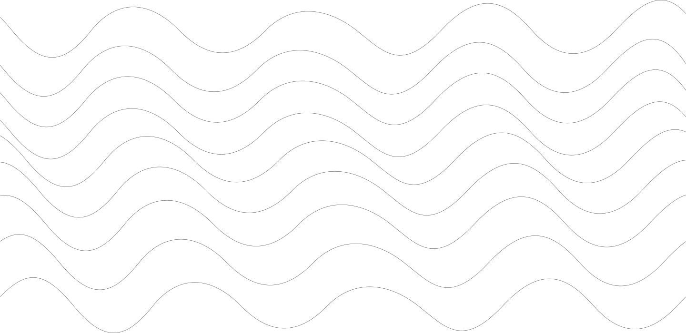
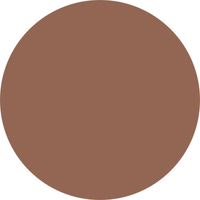
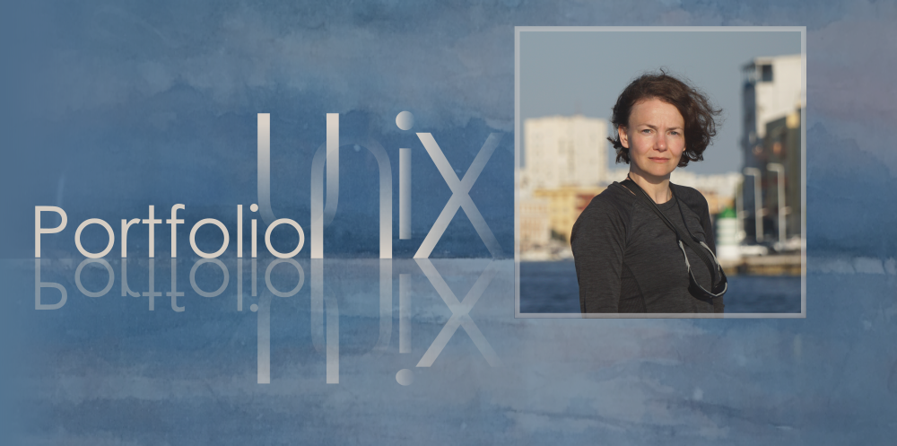
Elena Gilenko
Frontend Developer · UX/UI Design
Webdesign · Grafikdesign · Videografie
Frontend Developer
UX/UI · Grafik
Webdesign
Videografie
the wind in your sails
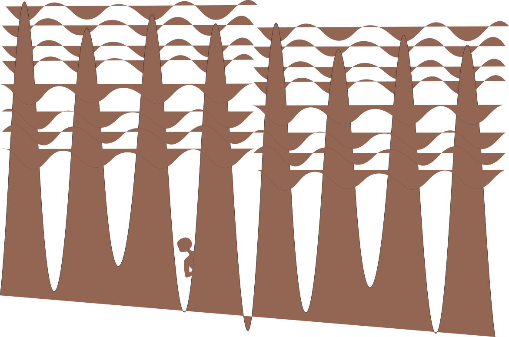
Automotive
Gestaltung digitaler Infotainment- und HMI-Systeme im Fahrzeug.
Im Auftrag von CARIAD / VW Group
Screenlayouts, UI-Komponenten und grafische Assets entstehen auf Basis definierter Styleguides und technischer Anforderungen. Der Fokus liegt auf klar strukturierten Interfaces, konsistenter visueller Gestaltung und der präzisen Spezifikation von Benutzeroberflächen für moderne Infotainment-Systeme im Automotive-Umfeld.
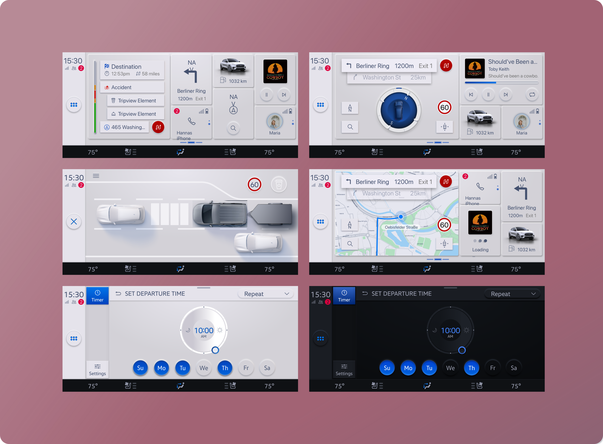
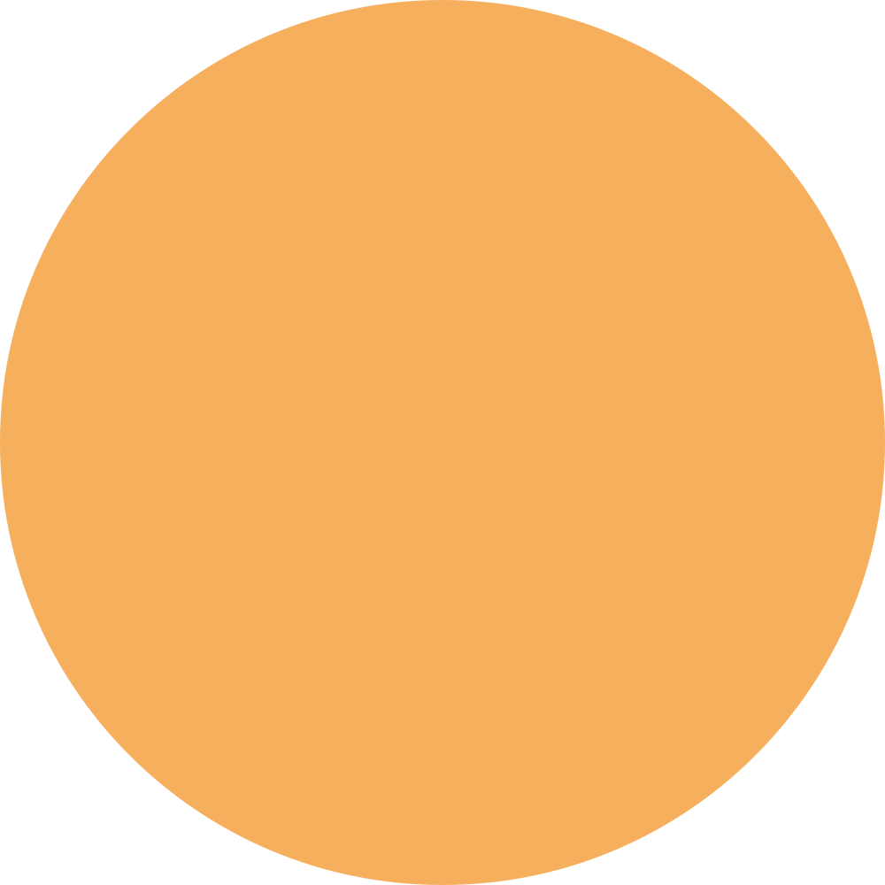
Lost Dot
„Versteckte Plätze“ – Guide-App für legendenumwobene Orte
Im Rahmen eines UI/UX-Kurses, Juni 2022
Die POI-App führt Nutzer zu wenig bekannten Orten mit besonderen Geschichten und bietet Einblicke hinter die Fassade einer Region. Orte werden mit historischen Fakten, Legenden und Mythen verbunden, um ein emotionales, erzählerisches Erlebnis zu schaffen. Eine Kartenansicht mit markierten Punkten sowie kurze, leicht verständliche Texte machen die App ideal für unterwegs und lassen versteckte, oft übersehene Plätze neu entdecken.
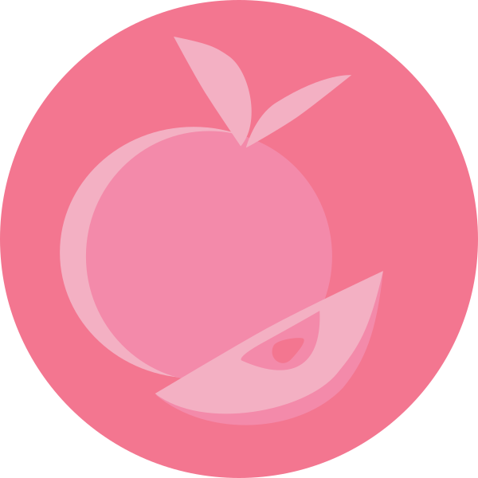
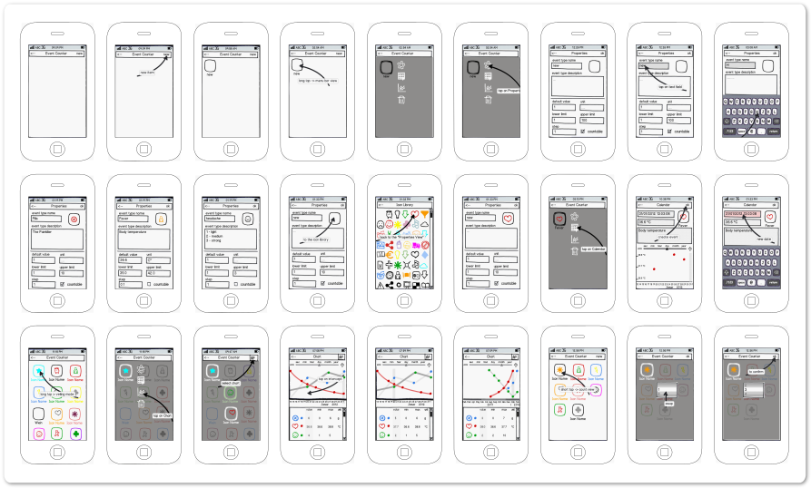
Cute Counter
App zur Erfassung, Analyse und visuellen Darstellung zählbarer Ereignisse
Im Rahmen einer Bachelorarbeit, Juni 2022
Zahlen bestimmen unser Leben — überall wird gezählt, gemessen und ausgewertet. Dahinter steht der Wunsch, Zusammenhänge besser zu verstehen, Entwicklungen nachvollziehen zu können und fundierte Entscheidungen zu treffen. Cute Counter unterstützt dabei, Daten übersichtlich zu erfassen und komplexe Informationen visuell verständlich darzustellen
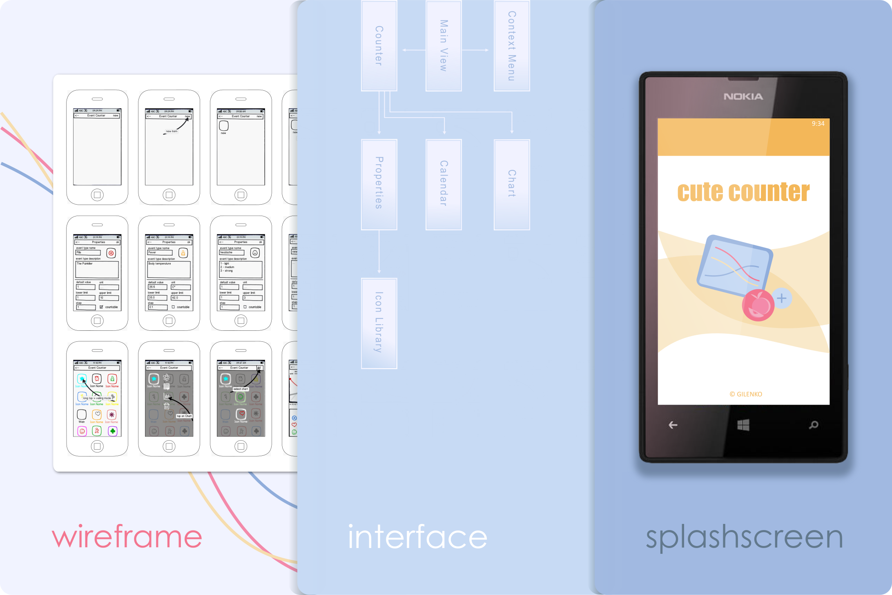
Intercom
Embedded Android-Anwendung für Kommunikation und Geräteverwaltung
Callom GmbH – RESIDIUM Produktlinie
Entwicklung einer Android-basierten Anwendung für Embedded-Geräte mit Fokus auf Interfacegestaltung und Systemintegration. Umsetzung neuer Funktionen, Gestaltung grafischer Elemente sowie Implementierung von Video-Streaming (H.264, Motion JPEG). Zusätzlich Mitwirkung an Softwarearchitektur, Schnittstellendefinition und Qualitätssicherung.
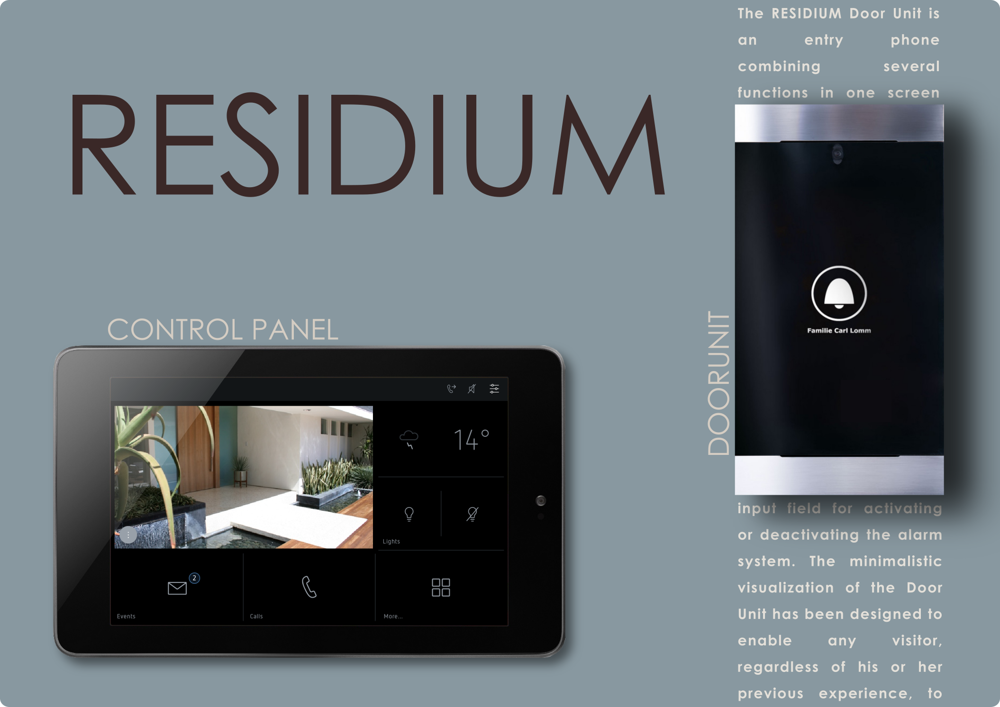
Soccer Area Management
Corporate Identity, Web, Marketing und Branding für Fußballagentur.
Eigenes Projekt – Beratungsagentur für Spieler
Logo-Entwicklung, Website-Gestaltung, Social-Media-Content, Flyer und Merchandising wurden erstellt, um eine konsistente Markenidentität zu schaffen. Ziel war es, die Sichtbarkeit der Agentur zu erhöhen und digitale sowie analoge Kommunikationskanäle professionell zu verbinden.
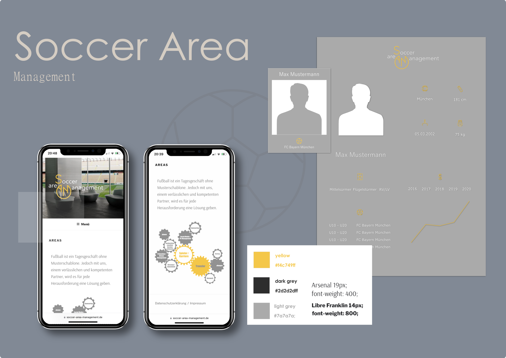